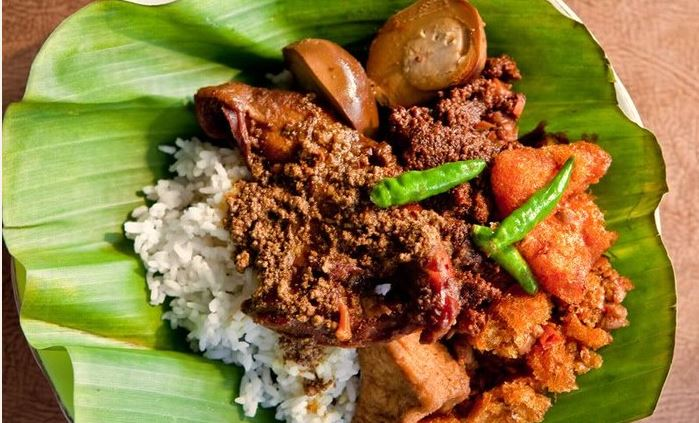
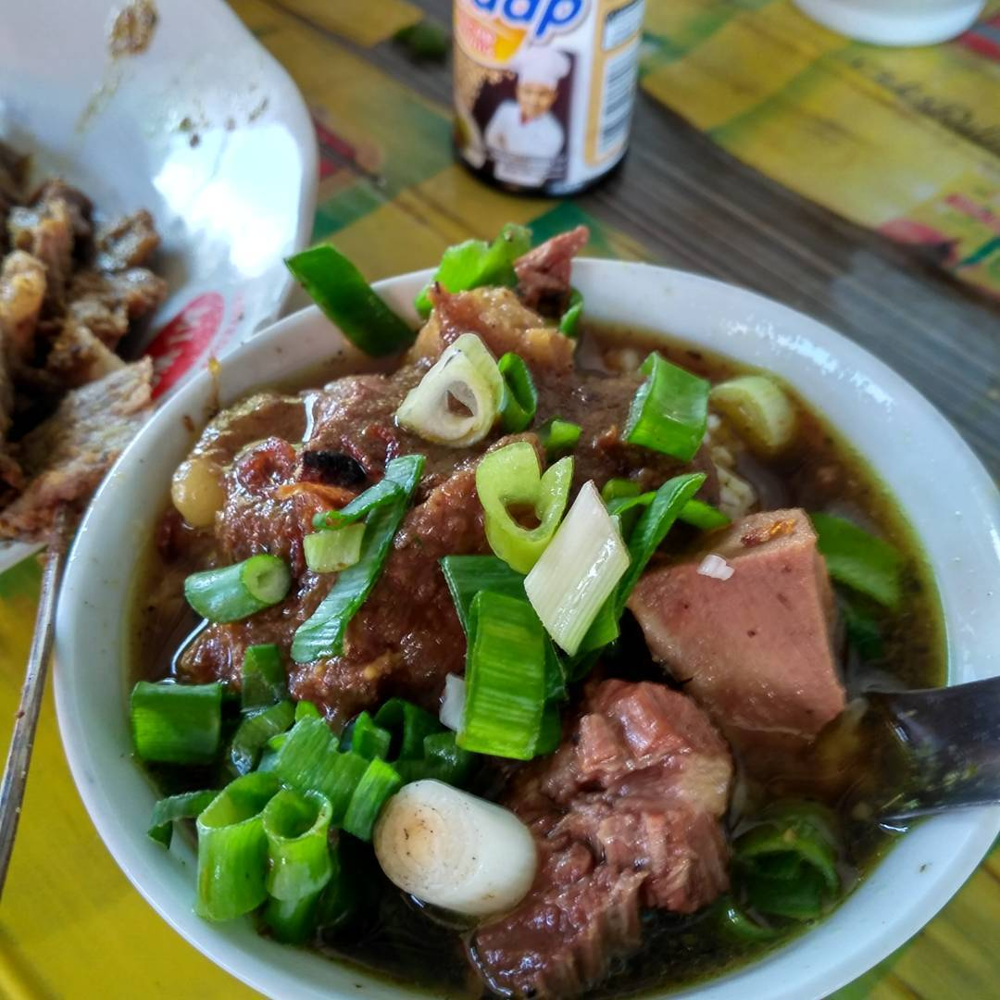
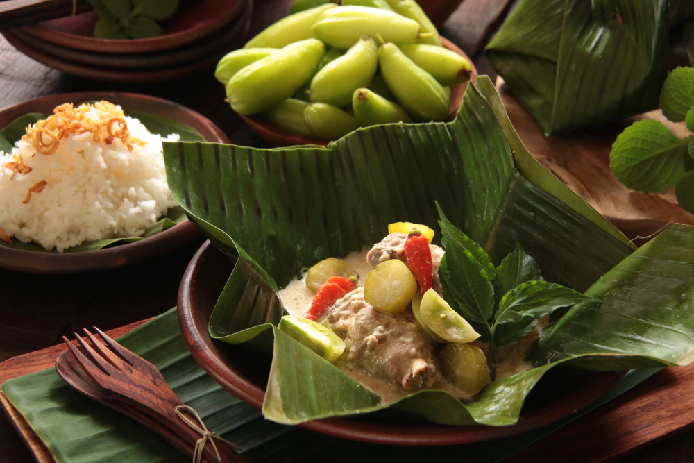

Gudeg |
Nasi Grombyang |
|  |
 |
|
Gudeg adalah salah satu masakan khas indonesia yang terkenal akan
kelezatannya. Masakan ini merupakan masakan tradisional dan khas
Provinsi Yogyakarta dan Jawa Tengah Indonesia. Dalam perkembangannya,
masyarakat mengenal gudeg terkenal berasal dari Yogyakarta sehingga
membuat kota ini dikenal dengan nama Kota Gudeg. Gudeg terbuat dari nangka muda mentah (Jawa: gori). Perlu waktu berjam-jam untuk membuatnya. Gudeng dimasak dengan gula aren, dan santan rempah-rempah tambahan termasuk bawang putih, bawang merah, kemiri, biji ketumbar, lengkuas, daun salam, dan daun jati, yang memberikan warna coklat kemerahan ke masakan. Dengan berbagai campuran bumbu tersebut, gudeg menjadi terasa lezat dan memiliki rasa yang khas dan enak sesuai dengan selera masyarakat Jawa pada umumnya. Warna coklat biasanya dihasilkan oleh daun jati yang dimasak bersamaan. Gudeg biasanya dimakan dengan nasi dan disajikan dengan kuah santan kental (areh), ayam kampung, telur, tempe, tahu dan sambal goreng krecek. |
Nasi Grombyang adalah sejenis nasi campur yang merupakan makanan khas
dari masyarakat Pemalang, Jawa Tengah. Nama makanan ini berasal dari
bentuk penyajiannya, yaitu antara isi dan kuah lebih banyak kuahnya
sehingga kelihatan bergoyang-goyang Ramuan dari kuliner ini sendiri pun terdiri dari nasi, irisan daging kerbau dan kuah, disajikan dalam mangkuk kecil dan dilengkapi dengan sate kerbau. Ciri khas lainnya dari nasi grombyang terletak pada tempat jualannya yang berupa kuali besar, tempat nasi ditutupi dengan kain merah, diserta penerangan remang-remang lampu templok. Pembeli menikmati hidangan dengan duduk di kursi kecil pendek Tidak diketahui dengan pasti kapan makanan khas ini mulai diciptakan. Namun menurut penuturan para orang tua di Pemalang, makanan khas ini sudah ada sejak tahun 1960-an. Pada waktu itu penjual nasi grombyang menjual dagangannya secara tidak menetap, tetapi berkeliling kampung. Penjual nasi grombyang yang terkenal antara lain H. Warso di Jl. R.E. Martadinata di dekat alun-alun, serta H. Waridin di Sirandu dekat bekas terminal lama Pemalang. |
Garang Asem |
Tahu Petis |
|  | |
|
Bila Jawa Barat memiliki pepes sebagai sajian khas yang diolah dengan
daun pisang, maka Jawa Tengah memiliki Garang Asem. Walaupun sama-sama
diolah dengan cara dibungkus dengan daun pisang, cita rasa kedua macam
masakan ini jelas berbeda. Garang Asem, sesuai namanya, memiliki rasa
asam dan segar yang didapat dari penggunaan bahan seperti belimbing
wuluh atau tomat hijau. Rasa asam ini kemudian berpadu dengan cita
rasa pedas menciptakan sajian dengan cita rasa yang lezat dan membuat
makanan khas Jawa Tengah ini sangat cocok dinikmati dengan nasi
hangat. Garang Asem merupakan makanan khas Grobogan, Jawa Tengah. Namun seperti banyak sajian lain di Indonesia, Garang Asem kemudian mengalami beberapa perubahan, sehingga ada banyak variasi sajian Garang Asem yang bisa Anda temukan di Jawa Tengah dan daerah-daerah lain. Garang Asem yang 'asli' biasanya tidak menggunakan santan, sehingga kaldunya bening. Sedangkan, Garang Asem ayam dari Solo kuahnya tidak bening, karena menggunakan sedikit santan atau kocokan telur ayam. Garang Asem dari Yogyakarta lain lagi, karena tidak hanya menggunakan santan, tetapi juga menggunakan daging cincang yang dibentuk bola-bola kecil, dan bukan menggunakan daging ayam kampung seperti Garang Asem dari Grobogan. Selain itu, masih banyak variasi sajian Garang Asem yang bisa Anda temukan di Indonesia. |
Tahu petis adalah makanan kecil asli dari semarang. Makanan ini sesuai
dengan namanya, yaitu tahu yang diberi bumbu petis. Petis ini sendiri
merupakan pasta atau sambal berwarna hitam yang dibuat dari udang.
Rasanya agak manis dan asin dan punya aroma yang khas, karena rasanya
yang agak manis itulah, paling pas tahu petis ini dinikmati dengan
cabe rawit. Biasanya cara menikmati tahu petis ini dengan menyisipkan
bumbu petis di belahan tahu yang sudah digoreng atau bisa juga di
cocolkan ke bumbu petisnya. Kalau anda berkunjung ke Semarang, dipastikan pasti anda akan menemukan banyak sekali penjual tahu petis yang menjajakannya bersama gorengan lain atau khusus hanya menjual tahu petis. Bahkan sekarang sudah ada yang menjadikan usaha tahu petis menjadi usaha franchise. Gurihnya bumbu petis dipadu dengan renyah lembutnya tahu pong memang sangat cocok dijadikan teman cemilan saat berkumpul dengan keluarga. Bagi anda yang tidak bisa membuat bumbu petisnya, jangan khawatir. Sudah banyak bumbu-bumbu petis instant yang bisa ditemukan di supermarket dan pasar tradisional. |